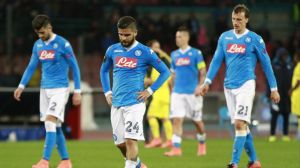

Pogba à la passe et Mandzukic à la finition : la Juventus continue sa route vers le titre
Grâce à un but de Mario Mandzukic, la Juventus Turin s'est imposée contre Emploi ce samedi (1-0).
Elle prend provisoirement six points d'avance sur Naples qui affronte l'Udinese ce dimanche.
La Juventus Turin a conforté sa place de leader de Serie A samedi en battant Empoli 1-0 lors de la 31e journée et compte désormais six longueurs
d'avance sur son dauphin Naples, contraint à la victoire dimanche sur le terrain de l'Udinese. Les Turinois maintiennent donc le rythme, avec
désormais une incroyable série de 20 victoires et un nul depuis leur dernière défaite en championnat, fin octobre contre Sassuolo.

L'Udinese joue un mauvais tour à Naples
Reléguée à 6 points de la Juventus, Naples a été battu à l'Udinese (3-1)
lors de la 31e journée, laissant Turin faire le trou
en tête du championnat.
Naples a vécu une après-midi cauchemardesque dimanche lors de la 31e journée sur le terrain de l'Udinese,
avec une défaite 3-1, aggravée par le carton rouge reçu par Gonzalo Higuain,
qui laisse à la Juventus Turin six points d'avance en tête de la Serie A.
La Juventus a pris le meilleur sur Milan samedi soir (2-1) et elle peut, pour cela,
remercier Paul Pogba, auteur du but victorieux.
Le grand choc de la 32e journée de Serie A a tourné ce samedi à l'avantage de la Juventus de Turin.
La Vieille Dame a pris le dessus sur son vieux rival (2-1). Une victoire sur le plus petit des scores
récoltée grâce à Paul Pogba. L'international français a inscrit le but décisif à la 65e minute du jeu.
Sur un corner botté par Claudio Marchisio, il a contrôlé le cuir de la poitrine avant d'enchainer avec une
frappe en puissance. C'est la première fois de sa carrière qu'il marque un but face aux Rossonerri.
Avec cette réalisation, il affiche aussi 7 buts en championnat durant l'exercice en cours.
Il n'est plus qu'à une unité de son meilleur total sur une saison.